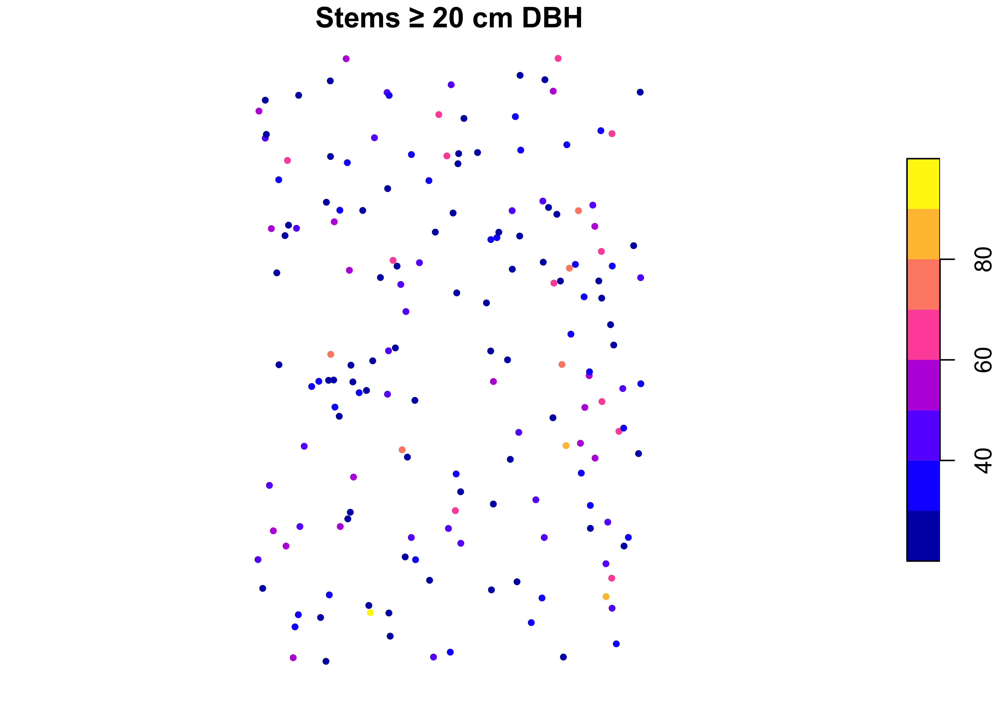

install.packages(c(
"sf", "terra", "dplyr", "tidyverse", "tmap",
"ggplot2", "gstat", "spdep", "elevatr", "rnaturalearth"
))1 Getting Started
1.1 Reproducibility
An audit stands or falls on whether someone else can reproduce the number. A spreadsheet built with forty manual clicks cannot be re-run, cannot be reviewed line by line, and cannot be trusted a year later when the inputs have changed. A script can. This is the reason to do spatial work in R: every decision, from the projection you chose to the buffer distance you applied, is written down and repeatable.
R is a free, open-source language with a mature ecosystem for geographic data. In one session you can read a shapefile a surveyor sent you, pull an elevation model from an open server, overlay the two, extract terrain at your field plots, fit a model, and export a map, without leaving the environment or paying for a licence. For a forest-carbon or agriculture auditor that means the whole chain from raw data to reported estimate lives in one reviewable document. This course uses the modern R-spatial stack, built on two packages that have become the standard tools of the field (Hijmans, 2024; Pebesma, 2018).
1.2 The stack
You will meet these packages throughout the book. Install them once before you begin.
| Package | Role |
|---|---|
sf |
Vector data: points, lines, polygons |
terra |
Raster data: imagery, elevation, gridded surfaces |
dplyr / tidyverse
|
Data wrangling and pipes |
tmap |
Thematic maps, static and interactive |
ggplot2 |
Statistical graphics |
gstat |
Geostatistics and interpolation |
spdep |
Spatial autocorrelation and neighbours |
To install everything the course needs, run this once in the console. It is set not to execute when the book renders.
Load the core three at the top of any spatial script:
The messages sf and terra print on loading name the versions of GDAL, GEOS and PROJ you are linked against. Note them: a projection or geometry result can occasionally differ between library versions.
1.3 Projects
Before loading data, put your work in an RStudio Project, a folder with an .Rproj marker. It fixes two things that otherwise cause endless confusion: it sets the working directory to the project root, and it lets you refer to data with short relative paths like data/scbi_stems.csv instead of a full path tied to your machine. A tidy layout looks like:
training-rspatial/
├── data/ # input datasets
├── 01-getting-started.qmd
├── 02-vector-data.qmd
└── training-rspatial.RprojWith a project open, every path in this book that begins with data/ resolves correctly.
1.4 The running dataset
One dataset runs through the whole course: a mapped forest-dynamics plot, modelled on the Smithsonian ForestGEO plot at the Conservation Biology Institute in Front Royal, Virginia. Every stem in a 400 by 640 metre plot is stem-mapped, identified to species, and measured for diameter. It is an ideal teaching set because it is large, real in structure, and every tree carries a location.
About the data
The stem list (species, diameter) follows the published ForestGEO census used in the companion uncertainty book. The within-plot coordinates were generated across the real plot footprint because the source census table omitted them, so the map is representative rather than a survey of record. Terrain, imagery and LiDAR layers in later chapters are simulated over the same footprint for a clean, always-runnable progression, and every synthetic layer says so where it is built.
The stem table is an ordinary CSV, so base R reads it without any spatial machinery:
stems <- read.csv("data/scbi_stems.csv")
str(stems)
#> 'data.frame': 2287 obs. of 10 variables:
#> $ treeID : int 2695 1229 1230 1295 1229 66 2600 4936 1229 1005 ...
#> $ stemID : int 2695 38557 1230 32303 32273 31258 2600 4936 36996 1005 ...
#> $ dbh : num 1.4 1.7 1.4 1 2.5 2.2 1.8 1.4 2 1.4 ...
#> $ genus : chr "Acer" "Acer" "Acer" "Acer" ...
#> $ species: chr "negundo" "negundo" "negundo" "negundo" ...
#> $ family : chr "Sapindaceae" "Sapindaceae" "Sapindaceae" "Sapindaceae" ...
#> $ gx : num 188 122 164 106 325 ...
#> $ gy : num 466 568 459 157 319 ...
#> $ lon : num -78.1 -78.1 -78.1 -78.1 -78.1 ...
#> $ lat : num 38.9 38.9 38.9 38.9 38.9 ...Two functions tell you almost everything about a new dataset. summary() shows the distribution of each column; a grouped dplyr summary reads the forest:
summary(stems[, c("dbh", "gx", "gy")])
#> dbh gx gy
#> Min. : 1.00 Min. : 0.2 Min. : 0.0
#> 1st Qu.: 1.20 1st Qu.: 99.1 1st Qu.:160.9
#> Median : 1.70 Median :202.4 Median :321.7
#> Mean : 5.52 Mean :201.5 Mean :322.4
#> 3rd Qu.: 3.40 3rd Qu.:302.0 3rd Qu.:481.4
#> Max. :92.00 Max. :400.0 Max. :639.9
stems |>
group_by(genus) |>
summarise(n = n(), mean_dbh = round(mean(dbh), 1)) |>
arrange(desc(n)) |>
head(8)
#> # A tibble: 8 × 3
#> genus n mean_dbh
#> <chr> <int> <dbl>
#> 1 Lindera 1201 1.6
#> 2 Rosa 151 1.5
#> 3 Carya 137 12.7
#> 4 Amelanchier 123 3.1
#> 5 Hamamelis 107 2.6
#> 6 Quercus 84 27.8
#> 7 Fraxinus 76 23.6
#> 8 Carpinus 57 5.4Diameters run from saplings at 1 cm to canopy trees near a metre, and a handful of genera dominate the stem count. That is the size and composition structure every biomass and carbon calculation later in the book will rest on.
1.5 Vector and raster
Spatial data come in two great families, and knowing which you hold is the first decision in any analysis. Vector data represent discrete objects by their geometry: a tree is a point, a road a line, a stand boundary a polygon, each carrying attributes in a table. Raster data represent a continuous surface as a grid of equal cells, each holding one value: elevation, reflectance, canopy height. Our stems are vector; the elevation and imagery we bring in later are raster. Most real analysis moves between the two, and the middle chapters of this book are about doing that cleanly.
1.6 A first map
The CSV knows nothing about geography yet: lon and lat are just numbers. sf turns them into geometry by naming the coordinate columns and the coordinate reference system, here WGS 84 longitude/latitude, whose EPSG code is 4326:
stems_sf <- st_as_sf(stems, coords = c("lon", "lat"), crs = 4326)
stems_sf
#> Simple feature collection with 2287 features and 8 fields
#> Geometry type: POINT
#> Dimension: XY
#> Bounding box: xmin: -78.1454 ymin: 38.8935 xmax: -78.14078 ymax: 38.89925
#> Geodetic CRS: WGS 84
#> First 10 features:
#> treeID stemID dbh genus species family gx gy
#> 1 2695 2695 1.4 Acer negundo Sapindaceae 188.0 466.1
#> 2 1229 38557 1.7 Acer negundo Sapindaceae 121.5 567.9
#> 3 1230 1230 1.4 Acer negundo Sapindaceae 164.0 458.6
#> 4 1295 32303 1.0 Acer negundo Sapindaceae 106.1 156.9
#> 5 1229 32273 2.5 Acer negundo Sapindaceae 325.0 318.9
#> 6 66 31258 2.2 Acer negundo Sapindaceae 166.3 465.8
#> 7 2600 2600 1.8 Acer negundo Sapindaceae 385.3 198.1
#> 8 4936 4936 1.4 Acer negundo Sapindaceae 281.6 332.4
#> 9 1229 36996 2.0 Acer negundo Sapindaceae 292.5 639.8
#> 10 1005 1005 1.4 Acer negundo Sapindaceae 82.6 481.7
#> geometry
#> 1 POINT (-78.14323 38.89769)
#> 2 POINT (-78.144 38.8986)
#> 3 POINT (-78.14351 38.89762)
#> 4 POINT (-78.14418 38.89491)
#> 5 POINT (-78.14165 38.89637)
#> 6 POINT (-78.14348 38.89768)
#> 7 POINT (-78.14095 38.89528)
#> 8 POINT (-78.14215 38.89649)
#> 9 POINT (-78.14202 38.89925)
#> 10 POINT (-78.14445 38.89783)Notice what sf prints: the geometry type (POINT), the bounding box, the CRS (Geodetic CRS: WGS 84), and the attribute table with a geometry column on the end. An sf object is a data frame that also knows where each row sits on Earth. The plot layer also ships as a shapefile, read the same way with st_read("data/scbi_stems.shp").
Plotting one attribute draws a map coloured by that value. We map the larger stems to keep the picture legible:
canopy <- stems_sf[stems_sf$dbh >= 20, ]
plot(canopy["dbh"], pch = 19, cex = 0.5, main = "Stems ≥ 20 cm DBH")
There is the plot: canopy trees scattered across the footprint, shaded by diameter. From here the course is about doing this properly.
1.7 First checks
The first thing to do on any real project is not analysis but a coordinate sanity check. A layer whose CRS is wrong, or missing, will silently misplace every downstream result, and the error is invisible on a plot that looks fine on its own axes. Two questions answer it: does the layer declare a CRS, and does it land where it should on Earth?
The bounding box should fall over Front Royal, Virginia (near 78.1° W, 38.9° N). If it landed in the Gulf of Guinea at (0, 0), the coordinates were never georeferenced. This is exactly the opening move of any mapping template: read the layer, confirm its CRS, confirm its extent, and only then begin. Every keystone project in this book starts here, because a defensible result begins with knowing your data are where they claim to be.
1.8 Exercises
- Read
scbi_stems.csvand report the number of stems, the number of distinct genera, and the mean and maximum diameter. Which genus has the most stems? - Convert the table to an
sfobject withst_as_sf(), then confirm its CRS withst_crs()and its extent withst_bbox(). In one sentence, why is checking the CRS the first thing you should do? - Map the stems coloured by genus for the three most common genera only. Do they appear mixed or spatially segregated?
- Add a
basal_areacolumn (the cross-sectional area of each stem,pi * (dbh/2)^2in cm²) and report total basal area by genus. Which genus dominates the stand by basal area rather than by stem count?